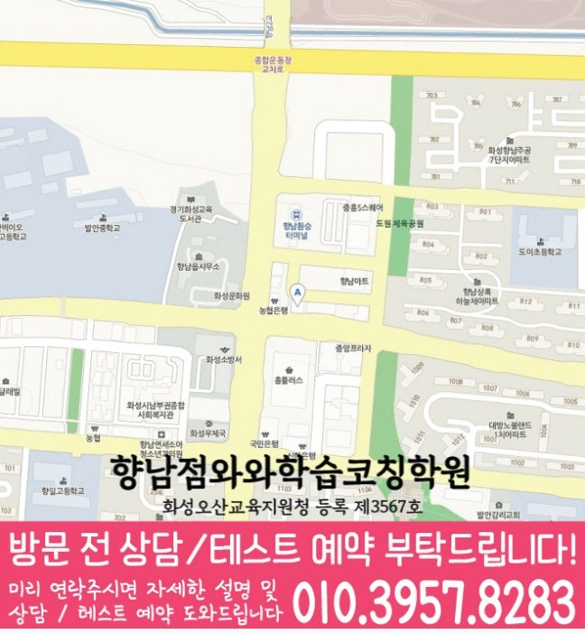

와와학습코칭센터 향남점
경기 화성시 향남읍 발안로 103-6 J&H빌딩 402호
MIDDLE SCHOOL ENGLISH COACHING
와와학습코칭센터 향남점의 위치와 과목별 가능 학년을 확인하고, 중등 영어 상담에 필요한 학교·학습 자료를 준비해 보세요.
와와학습코칭센터 향남점의 영어 가능 학년 안내: 중1, 중2, 중3. 현재 수업 시간·반 편성·정원은 상담에서 확인해 주세요.
경기 화성시 향남읍 발안로 103-6 J&H빌딩 402호
현재 반 편성과 시간표는 상담에서 확인
화성오산교육지원청 등록 제3567호
통합 상담 전화 010-6839-8283 · 문의할 때 와와학습코칭센터 향남점과 학생의 학년을 말씀해 주세요.
교습비 자료의 과목·수업 시간·횟수와 별도 비용을 상담 내용과 함께 확인해 주세요.
아래는 가정에서 학습 상태를 정리하는 방법입니다. 실제 수업 구성과 학교별 진도는 센터 상담에서 확인해 주세요.
외운 단어를 문장 안에서도 알아볼 수 있는지 확인해 보세요. 틀린 문장은 모르는 어휘, 문장 구조, 문법 적용 중 어디에서 막혔는지 표시합니다.
정답의 근거가 되는 문장에 밑줄을 긋고, 주어·동사와 연결 표현을 나누어 읽어 봅니다. 서술형에서는 뜻이 맞는지와 어순·철자가 맞는지를 구분해 확인합니다.
학교 교과서·프린트·수행평가 안내에서 범위를 확인해 주세요. 같은 문법이 다른 문장에 쓰였을 때도 설명할 수 있는지 보며 다음 복습 분량을 정합니다.
학교 참고 목록은 발안중학교, 하길중학교, 향남중학교, 화성상신중학교, 화성중학교입니다. 학교별 전용 반 개설 여부는 별도로 확인해 주세요. 재학 학교와 학년을 알려 주고 학교 시험 범위표, 교과서와 수업 프린트를 바탕으로 상담할 수 있습니다.
와와학습코칭센터 향남점의 영어 가능 학년 안내: 중1, 중2, 중3. 현재 수업 시간·반 편성·정원은 상담에서 확인해 주세요.
학교 참고 목록은 발안중학교, 하길중학교, 향남중학교, 화성상신중학교, 화성중학교입니다. 학교별 전용 반 개설 여부는 별도로 확인해 주세요. 재학 학교와 학년을 알려 주고 학교 시험 범위표, 교과서와 수업 프린트를 바탕으로 상담할 수 있습니다.
어휘·독해 오답과 최근 학교 학습 자료를 준비해 보세요. 학생이 혼자 해결한 부분과 도움이 필요했던 부분을 표시하고, 희망하는 수업 요일·시간도 함께 정리하면 좋습니다.
센터의 교습비 자료와 상담에서 과목·횟수·수업 시간을 대조해 주세요. 교재비 등 별도 비용, 결석 시 보강 기준과 과제 피드백 방식도 함께 확인하면 좋습니다.
다음은 상담 준비를 돕기 위한 가상 상황입니다.
뜻을 몰랐던 단어와 해석이 막힌 문장을 최근 학습 자료에 표시하고, 무엇을 먼저 연습하면 좋을지 질문하는 상황을 생각해 볼 수 있습니다.
일주일의 학교 일정과 집에서 공부할 수 있는 시간을 적어 봅니다. 상담에서는 시작할 분량과 다음 점검일을 어떻게 정할지 질문해 보세요.


와와학습코칭센터 향남점 기준으로 향남읍 학생의 중등영어 상담 범위를 확인합니다. 실제 방문·상담 전에는 주소와 이동 동선을 함께 확인해 주세요.